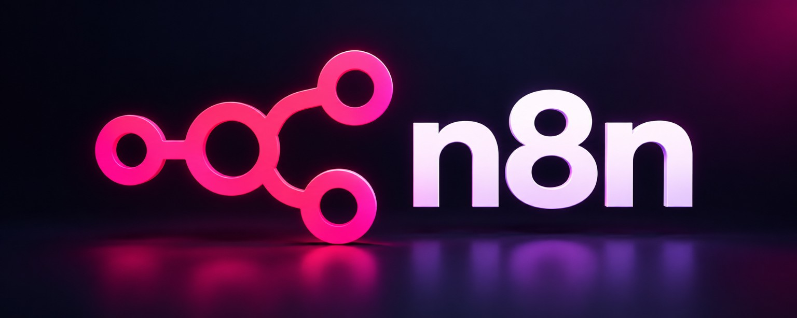

Desenvolvimento WebSites e sistemas
DESENVOLVEDOR & AUTOMAÇÃO COM IA
Transformando ideias em soluções reais com Inteligência Artificial.
Desenvolvo sistemas web, automações e integrações com IA para ajudar negócios a economizar tempo, melhorar o atendimento e gerar resultados reais.

Automação com IAProcessos inteligentes
Integrações de APIsWhatsApp, Webhooks e mais
Soluções PersonalizadasFoco no seu negócio
Projetos em destaque
Soluções reais desenvolvidas por mim, com foco em automação e atendimento.
Ver todos os projetos →
✦ PROJETO PRINCIPAL
Auri IA
Assistente de WhatsApp com Inteligência Artificial
Auri é uma assistente virtual para WhatsApp que atende, entende, responde, envia catálogos, coleta informações, agenda, tira dúvidas e realiza processos de forma automática.
- Atendimento inteligente no WhatsApp
- Envio de catálogos e mídias
- Integração com n8n e APIs
- Coleta de briefing e geração de conteúdo
- Automação de processos do seu negócio
‹A
Auri IAonline
◉♟✿▤
FLUXO DE AUTOMAÇÃO
- Fluxos no n8n
- Integração com Evolution API
- Respostas com IA (GPT)
- Envio de catálogos e imagens
- Registro e histórico de conversas
- Personalização para seu negócio

Automações com IA
Criação de fluxos inteligentes para automatizar tarefas e processos.
◉→♟→✿→▤
n8n · fluxos · integraçõesSites e Sistemas Web
Desenvolvimento de sites, sistemas e painéis personalizados.
Dashboard
Resumo
Relatórios
Projetos
Relatórios
Projetos
Integrações e APIs
Conexões entre sistemas, APIs e serviços para seu negócio.
fetch('https://api.exemplo.com', {Ver detalhes →
method: 'POST',
headers: {
'Content-Type': 'application/json'
},
body: JSON.stringify(data)
})
Sobre mim
Sou Wesley Santos, desenvolvedor com foco em inteligência artificial, automações e soluções web. Gosto de transformar ideias em projetos funcionais, sempre buscando praticidade, eficiência e resultados reais.
◉ Vamos conversar →
Habilidades e Ferramentas
JSJavaScript
TSTypeScript
⚛React
NNext.js
⬡Node.js
⌘n8n
ϟSupabase
♧APIs
▤Docker
⑂Git
◉WhatsApp
◎OpenAI
Vamos conversar?
Quer falar comigo sobre tecnologia, automação e desenvolvimento?
◉ Chamar no WhatsApp ↗